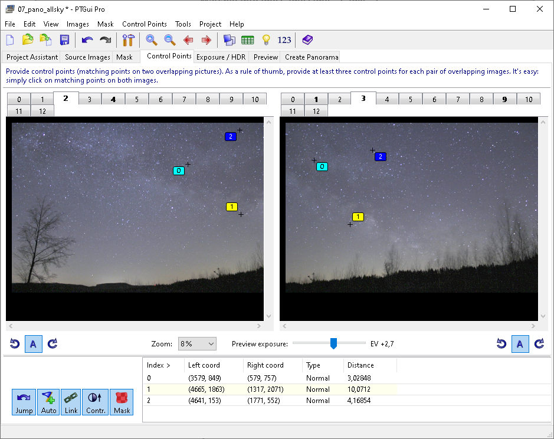

OpenCV Starry Sky Panorama Stitcher
Motivation
- PTGui (https://ptgui.com/) does an excellent stitching job but it does not recognize stars as features. On each combination of 2 starry sky image, at least 3 features on each have to be labeled manually . Taking 21 images of the night sky yields at least 36 overlaps between images. For each overlap at least 3 stars have to be labeled manually on both images of the overlap. Pretty annoying. 
-
https://github.com/opencv/opencv/blob/4.x/samples/python/stitching_detailed.py
is a great example but not very self-explanatory for someone who hasn't stitched panoramas with OpenCV
before. The stitching pipeline presented in
stitching_detail.py(comprising feature detection, pairwise image matching, homography estimation, bundle adjustment, waviness correction, image warping, stitching seam estimation and seaming/masking, timelapsing of warped images, blending of warped images) does not provide deep insights into what OpenCV is doing under the hood and what is the result/output of each step. Remedy is provided here: The stitching pipeline presented here is an enhanced version ofstitching_detaily.pyand offers more documentation within the code and a better understanding of each step within the stitching pipeline due to a lot of image output to disk. - The matchers used in
stitching_detaily.py(cv.detail_BestOf2NearestMatcherandcv.detail_BestOf2NearestRangeMatcher) perform poorly on starry sky images. Therefore a custom bruteforce matcher (leveragingcv.BFMatcher(cv.NORM_HAMMING)) is introduced here which returns a tuple ofcv2.detail.MatchesInfoobjects likecv.detail_BestOf2NearestMatcherandcv.detail_BestOf2NearestRangeMatcheralso do.
Collecting images for a fisheye panorama
For an all sky fisheye panorama starry sky images should be taken according to a plan.
For an 18 mm lens this setup yields good overlap between the images:
ORB keypoint/descriptor matching vs. shape/constellation matching
OpenCV matchers can match keypoints/descriptors, which are single points on each image:
On starry sky images, especially on images with a low amount of stars and a dark unique background, this can become problematic because »many stars look the same«.
Matching star constellations would be helfpful but OpenCV matchers are not able to match constellations – they are just able to match keypoints/descriptors.
The StarPolygonMatcher presented here provides this functionality:
Star constellations or polygons are compared based on angles, side lengths and star brightnesses.
For a 5-sided polygon like shown above there are 5 vertex angles, 5 side lengths and 5 star brightnesses.
The vertex angles and side lengths are not measured in the image plane ! The stars from the image plane are projected to a sphere in the physical real world. Angles and side lengths are then measured on this sphere leveraging spherical trigonometry. The radius of this sphere does not matter since side lengths of spherical triangles are measured in radian .
The panorama stitching pipeline
Examples
Example 1: Stitching daylight images
cv.detail_BestOf2NearestMatcher
(left) and
CustomBruteForceMatcher
(right) yield comparable results on daylight images.
Example 2: Colorizing seams and edges
Keypoints detected by ORB
Stars detected by Canny Edge
ORB features generated from stars detected by Canny Edge
Matches (inliers) found via ORB keypoing matching
Reducing the amount of stars by
sklearn.cluster.AgglomerativeClustering
All keypoints created by Canny Edge star detection:
Keypoints marked for deletion after a cluster size of 15 stars per image region was defined:
The remaining stars after clustering:
Star amount was reduced by splitting the image in several regions and reducing the size of clusters per region
simultaneously by
sklearn.cluster.AgglomerativeClustering
:
The 12 image regions used for star clustering are:
Matching polygons (star constellations) found by the Custom Star Polygon Matcher
Matches (inliers) found via StarPolygonMatching
Warped images
Seams
Colorized edges
Assembled panorama
Example 3: Removing the waviness effect
Example 4: Projections (warp modes)
Plane
Spherical
Affine
Cylindrical
Fisheye
Stereographic
CompressedPlaneA2B1
CompressedPlaneA1.5B1
Paninia2B1
Paninia1.5B1
Mercator
TransverseMercator
Example 5: Rotating cameras
0°
90°
...
Example 6: ORB matching results vs. CustomStarPolygon matching results
Left to do
-
Consider image distortion . Take some chessboard images and remove image distortion. Does this yield better polygon matching results?
-
Add multiprocessing for these (now consecutive) pipeline steps: Star regcognition, star amount reduction by sklearn.cluster.AgglomerativeClustering, polygon measuring
-
Drop mistakenly detected stars at the horizon edge.
December 2022
Joachim Broser